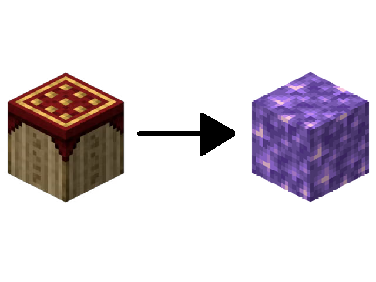

This one isn't exactly a news segment, but we need to inform you of the following:
Quartz News Network episodes starting from #5 are recorded both in
CRSS and CRSS 3, being split by the 'sponsored segment' between them.
There isn't a great way to indicate what server each segment is reffering to, so this is the
solution we've found:
Each segment will have a ¹ or ³ next to their title, to indicate which server they belong to.
We will not include this segment on future editions, but we will do the following:
Hovering over ¹ or ³ will show information about the server the segment refers to.
Try now by hovering over the superscript numbers!
Hopefully this clears the confusion for new readers in the future.
Citizens from Dema
have sent us letters declaring people in the city
are raising their levels of concern.
The bishops, authorities from The Sacred Municipality of Dema, have
told us to tell the citizens of Dema as well as you to report what
is bringing these levels of concern to their minds, and the bishops
will help you deal with it.
Other cities don't track their citizens' levels of concern, but the bishops
have said that if you're feeling yours are higher than normal, you can
feel free to contact them as well.
Breaking News! We were just unformed that Lupancham
has stopped aiding three Chunkian countries, including RFM, Grapetopia
and DRR.
This news came as a shock to residents of these Chunkian countries
as they depend on Lupancham helping them with financial aid and
would not survive on their own.
Salutations! The rest of this editions' articles were written
straight from Oak Studios at CRSS 3 ! Our writers will be
traveling back and forth through the two worlds to report
on relevant news from each.
Scientists have recently discovered that the lesser known "Pooja Rocks"
decay into Amethyst as time passes.
Here's an image to show the decaying process:

A few queer, creative, welcoming and silly technologists
from "Pridecraft Studios" have announced today that
they're working on an instant-chat platform that utilizes
the CRSS Internet to operate.
They've noted it will likely come out at the same time
the CRSSi is widely available.
Thank you for reading this edition of Quartz News Network!
You can watch all other editions clicking here,
or read all other HTML editions clicking here.